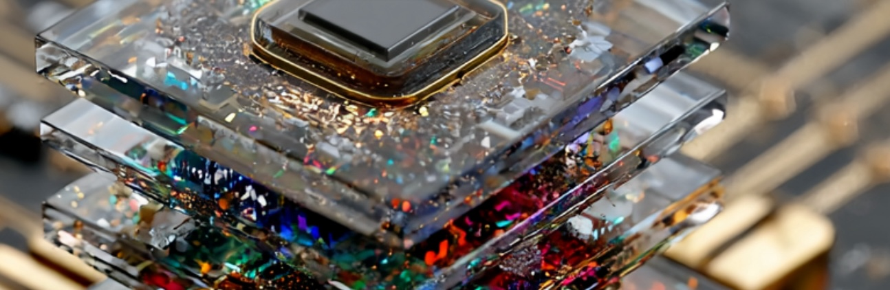

01 — The practice
Built to fit exactly what you need.
Artisan Technology LLC designs and builds custom software and hardware to solve problems that don't fit off-the-shelf solutions.
HardwareDevices, circuits and sensors, from first sketch to working build.
SoftwareFirmware, tools and applications written for your problem.
SystemsEverything designed as one, built to hold up in the real world.

Hover to clear the glass
02 — Principal engineer
Lindsay Moore
Principal Engineer · 10+ years
I'm a Design Thinker with 10+ years of experience. Really, I'm someone who's spent a decade asking "what if we did it this way?" and then building it.
I design systems, build things that matter, and bring a maker's mindset to every problem. I believe the best engineering is equal parts rigor and imagination.
Interesting questions, all the way through.
Stage 01Idea
Stage 02Prototype
Stage 03Production
I like interesting questions and the full arc: idea >> prototype >> production. I imagine big, tell the story that illuminates a path, then make sure we all finish together.
04 — Education
Trained in both worlds
- Master's, Computer ScienceUniversity of Chicago
- Master's, InformaticsUniversity of Minnesota
- Bachelor's, Production, Engineering & BusinessMcNally Smith College
05 — Community & research
Part of the scene
- Board, Pumping Station: OneChicago's oldest and largest hackerspace
- Research, STAGE CenterMultidisciplinary technology and arts lab, UChicago
- Research, Chicago Virtual ProductionAn independent virtual production group